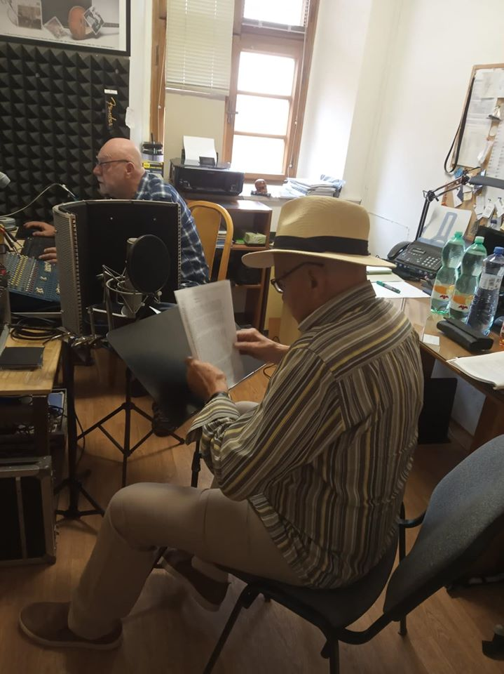

Naším cílem je představit Amelii Posse - Brázdovou české veřejnosti, která o její existenci bohužel netuší. V jejím rodném Švédsku je situace lepší, ale její památka začíná pomalu upadat. Proto chceme položit děkovnou památní desku na dům ve Stockholmu, kde žila a přijímala zachráněné uprchlíky.
Dalším cílem je ukázat veřejnosti, jak bylo těžké přežít toto hrozné období a také jak s těmito osobnostmi vynaložil komunistický režim.
Z vlastních nákladů jsme vydali knihu o celém příběhu Jakuba Grossmanna s titulem "Vůle 1939 - Můj útěk z Protektorátu".
Kniha zatím ještě není prodejná, slouží jako dar za podporu při projektu "Amelie 1939 aneb Po stopách Jakuba Grossmanna".
V rámci tohoto projektu jsme s malým filmovým štábem projeli celou cestu útěku Jakuba z Protektorátu až do Stockholmu
a natočili materiály pro dokument, o který projevila zájem Česká televize.
Během plánování projektu jsme navázali spolupráci s českými ambasádami v Litvě, Lotyšsku, Estonsku a Švédsku, které jsme navštívili a chystáme další společný
program v jejich zemích.
Naše kniha natolik zaujala herce Jana Přeučila, že nám zcela zdarma namluvil audioknihu. Nadále nás bude podporovat v tvorbě dokumentu.
